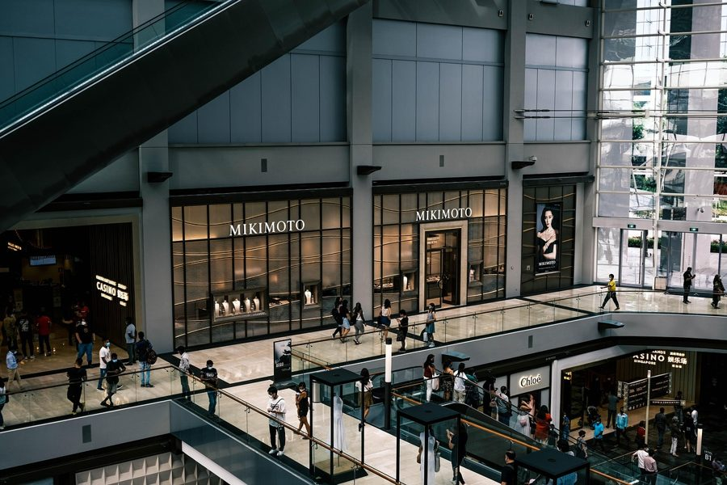

01
美 11월 소비자신뢰지수 1년 10개월 만에 최고
경제두 달 연속 반등하며 미국 소비 심리 개선세 지속

미국의 11월 소비자신뢰지수가 2개월 연속 오르며 1년 10개월 만에 최고치를 기록했습니다.
인플레이션 우려가 다소 완화되고 고용 시장이 안정적인 흐름을 보이면서 현지 소비자들의 심리가 크게 개선된 영향입니다.
연말 쇼핑 대목을 앞두고 미국 내 소비 지출이 활력을 유지할 수 있을지 시장의 관심이 쏠립니다.
참고: MBC 뉴스